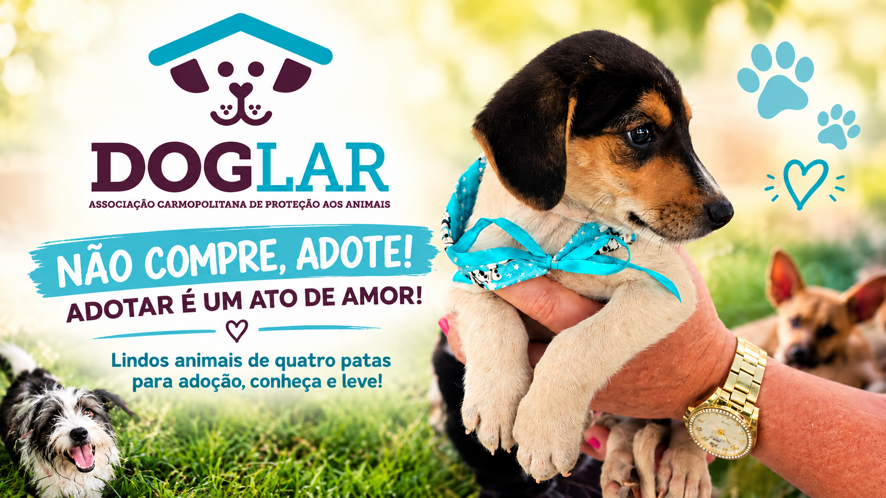
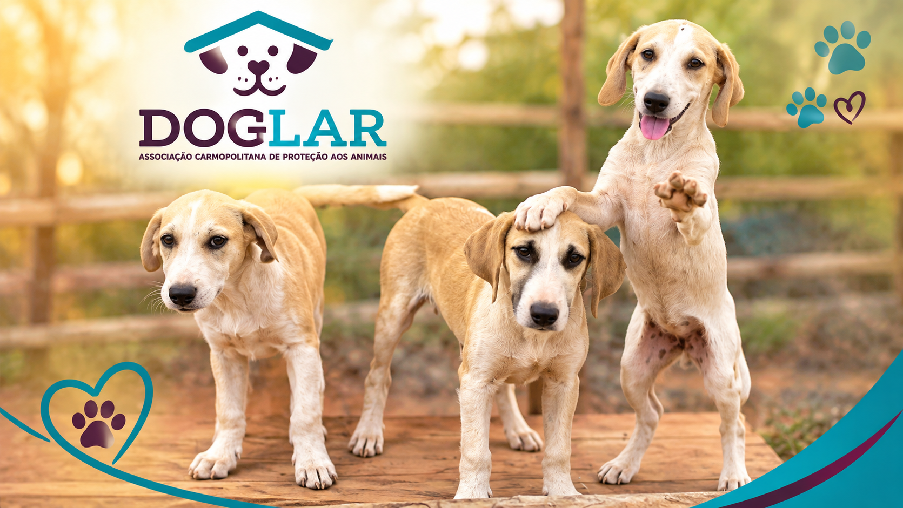
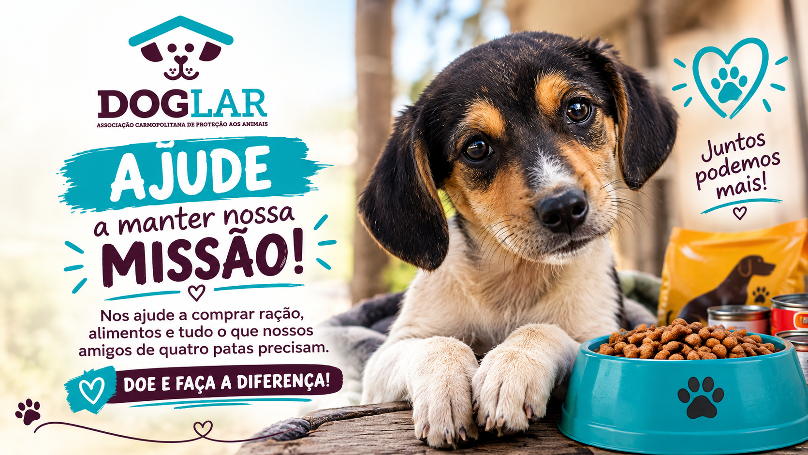

A DogLar é uma associação voluntária de proteção animal em Carmópolis de Minas, cuidando de cães resgatados e conectando eles a famílias que vão amá-los para sempre.
A DogLar — Associação Carmopolitana de Proteção aos Animais é uma organização sem fins lucrativos fundada em 2013, localizada na Avenida Presidente Tancredo Neves, no bairro São Francisco, em Carmópolis de Minas.
Trabalhamos, todos os dias, para defender a vida e a integridade dos animais em situação de vulnerabilidade — resgatando, cuidando e encontrando novos lares para cães que já passaram por abandono ou maus-tratos.

Cada gesto conta. Existem várias formas de fazer parte da rede de proteção da DogLar.
Sua contribuição ajuda a comprar ração, medicamentos e tudo que os animais precisam no dia a dia.
Conheça os cães disponíveis para adoção e dê a eles a chance de uma vida cheia de carinho.
Ajude no resgate, nos cuidados diários ou na divulgação das nossas ações. Entre em contato.

Copie a chave Pix abaixo e faça sua doação direto pelo app do seu banco.
Chave Pix: CNPJ da DogLar — Associação Carmopolitana de Proteção aos Animais